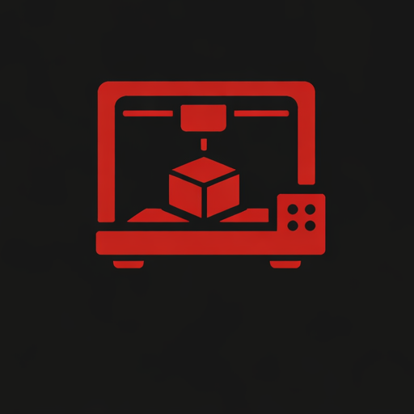
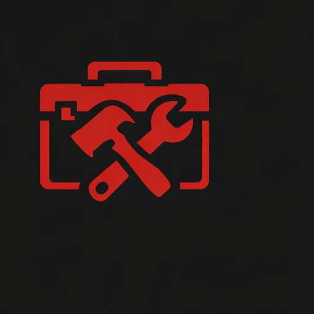

My Timeline
High School (2018–2022)
- Graduated with 95% average
- Student Council President
- Weightlifting Club
- Academic Awards
University (2022–2026)
- Queen's University
- Mechatronics & Robotics Engineering
- GPA: 4.20 / 4.30
- Dean’s List
Teaching Assistant (2024 – Present)
- Project Manager for first-year design teams
- Queen’s University
Line Cook & Gig Developer (2022–2024)
- Dundas Valley Restaurant
- Managed prep work and inventory
- Developed a Notion-based recipe database

Makerspace Supervisor (2023 – Present)
- Volunteer at SparQ Studios Makerspace
- Maintain 3D printers and electronic equipment
- Assist students with technical issues

General Labour (2018–2022)
- Landscaping, Canadian Tire & NoFrills
- Developed proficiency in manual labour and customer service